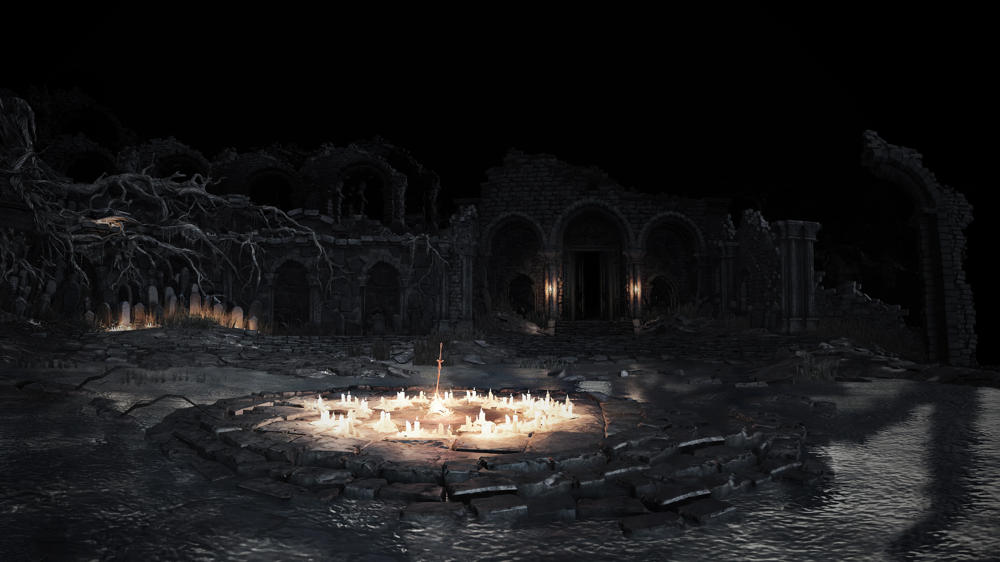

Retratos y postales del sombrío y oscuro mundo de Dark Souls III
Cementerio de CenizaIudex GundyrSantuario del EnlaceLa Guardiana de FuegoLudleth de Courland, el ExiliadoAndre de Astora, herrero del Santuario del EnlaceGran Muro de LothricVordt del Valle BorealAsentamiento de los No MuertosSiegward de CatarinaGran Árbol CorrompidoCamino de los SacrificiosSabio de CristalCatedral de la OscuridadDiáconos de la OscuridadTorreón de FarronVigilantes del AbismoCatacumbas de CarthusGran Señor WolnirLago ArdienteViejo Rey DemonioIrithyll del Valle BorealPontífice SulyvahnAnor LondoAldrich el Devoradioses, al consumir a GwyndolinBailarina del Valle BorealJardín del Rey ConsumidoOceiros, el Rey Consumido

Tumbas OlvidadasCampeón GundyrCastillo de LothricArmadura del Asesino de DragonesEl Gran ArchivoLorian, el Príncipe Anciano y Lothric, el Joven PríncipePico del ArchidragónWyvern AntiguoRey Sin Nombre junto a su fiel Rey de la TormentaHorno de la Primera LlamaAlma de CenizaEl Enlace de la Llama, el final de la aventura


 ↑
↑